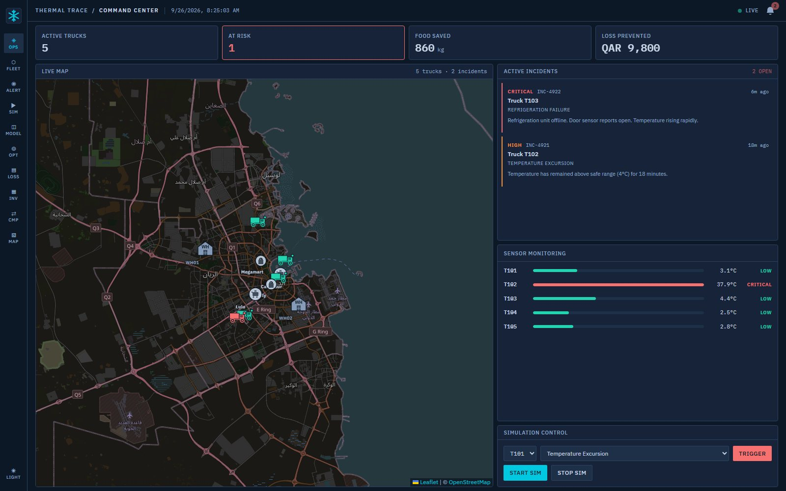

of global greenhouse-gas emissions come from food loss and waste.
Cited · Qatar NFSS 2030
03Why here
Qatar imports most of its fresh food across a summer that passes 45 °C.
45 °C
A fridge that fails at noon can spoil a load in hours.
National Food Security Strategy 2030
Food waste−50%
Food loss−30%
Targets set by the State of Qatar. Thermal Trace works on the loss in transit.
Illustrative timeline
04What actually goes wrong
Nobody finds out until the load is rejected at the gate.
By then the food is gone, and so is any chance to send it somewhere it could still be sold.
05The product in one line
Physics first. AI where it earns its place.
Sensors say what is happening, the maths says how much damage is done, and the optimizer chooses the action that loses the least food.
01
Sensors
say what is happening
Measured
02
Mathematics
says how much damage has occurred
Calculated
03
Prediction
says what may happen next
Predicted
04
Optimization
chooses the action
Optimized
05
Decision
turns it into an operation
Optimized
06
Food loss
proves what it saved
Calculated
Screenshot · mock data, design preview
06Detect
At the moment of failure, not at the gate.
A live map of every truck, with an incident the instant a temperature leaves the safe band and stays there.
A decision surface, not a dashboard of charts.
Thermal Trace · Command Center

07Physics before AI
Damage is measured, not guessed.
T102 · cargo temperatureExample scenario
Thermal exposure · °C·min
ET = Σ max(0, Ti − Tsafe) · Δt
Deterioration rate · Arrhenius
k(T) = kref · e(Ea/R)(1/Tideal − 1/T)
Shelf life spent · remaining
D = Σ k(Ti)·Δti→ L·(1 − D)
CalculatedDeterministic Python. No model touches these numbers.
08AI where it earns its place
Two AI layers. Neither may invent a number.
System 1 · local · offlinePredicted
Laya
Answers typed questions in a single pass: condition, recommended action, urgency, needs human review. Open source (Apache-2.0), runs on the laptop.
Never generates text. Corroborates the decision, never overrides it.
System 2 · cloud · OpenRouterAI-explained
DeepSeek V4.1 Flash
Turns the calculated facts into plain language for the operator. May rank only feasible options, and move the spoilage estimate only within a fixed band.
Never invents a temperature, ETA, cost or quantity.
Plain code, not AISpoilage probabilityAnomaly detectionDemand forecasting
ETAs · example scenario
09Optimization
Optimization, not vibes.
min( Ctransport + Cfood‑loss + Cdelay )
Subject to
ETA ≤ remaining safe time
Quantity ≤ available capacity
Storage temperature compatible
Cold storeETAFree spaceFeasible
WH01Central Warehouse
18 min1,200 kg✓ met
WH02North Cold Store
27 min800 kg✓ met
WH03South Distribution Hub
46 min600 kg✓ met
OptimizedDIVERT → WH01The optimizer picks the store; the model only explains why.
Illustrative bars · live figure in the demo
10The number that matters
Food saved. Money not thrown away.
food saved = (losswithout − losswith) × quantity
In kilograms, and in QAR as financial loss prevented. Computed by the food-loss engine for every intervention. Calculated
Without intervention
With Thermal Trace
food saved
Illustrative bars
11For the supermarket
Every delivery arrives with its thermal reserve.
Thermal reserve · safe shelf life left
reserve = L · (1 − D)
Calculated from every minute of the cargo's temperature history, not from the label date. Calculated
Label date
7.0 days
Thermal reserve
4.5 days
The hatched part was spent in the heat on the road. The label cannot see it; the reserve can.
Inventory
Optimized
Shelve by reserve, not by label. Surplus is flagged for transfer, discount or redistribution before it expires.
Finance
Calculated
Loss prevented in QAR for every intervention. Mark down early instead of writing off late.
Receiving
Measured
A temperature record for every delivery. Accept or reject at the dock on evidence, not argument.
Plain language about code-computed facts. No new numbers.
Synthetic
Test and training data, labelled as such. Never shown as measured.
Shown on screen, next to the number. Literature values are cited, not certified thresholds.
13What's different
Monitoring stops at the alert. We start there.
Alert-only monitoring
Thermal Trace
Alert when a limit is crossed
✓
✓
Measure the damage already done
—
✓
Choose where to divert, under constraints
—
✓
Record the action, prove the food saved
—
✓
Every number labelled with its source
—
✓
Open, and built to be reused
Open source · MIT licence
17 openly licensed data sources
Runs offline on one laptop · make demo
120 automated tests, full failure replayed end to end
SDG 12.3 · 2 · 13
B1Backup · Architecture
Nothing that cannot run on a laptop in a warehouse office.
SensorsIoT · MQTT
MQTTMosquitto
IngestFastAPI
StoragePostgres · Redis
Intelligencepure Python
APIREST · WebSocket
Command centerReact
GET /api/internal/context/{truckId}
The one contract between the data platform and the intelligence engine, so the two can never disagree about what a truck is experiencing.
B2Backup · Data provenance
17 openly licensed sources, served live.
Geography4
GeoNames places
OSM cold-chain sites
OSM HGV restrictions
Natural Earth
Weather3
Open-Meteo forecast
Open-Meteo ERA5
NASA POWER
Food science4
Product storage table
USDA Handbook 66
Codex Alimentarius
UNECE ATP
Emissions2
UK DESNZ / DEFRA factors
EEA / EMEP road transport
Routing1
OSRM road routing
Impact1
FAO Food Loss & Waste
Physics1
Psychrometrics (Magnus)
Operational1
Public holidays
Catalogue at GET /api/opendata. Literature values are cited, not certified thresholds.
—Reboot the Earth hackathon · CMUQ
Team 2. Thank you.
We built Thermal Trace: an open-source cold-chain decision system that measures how much safe life a failure has cost and chooses the action that loses the least food.
Najeeb AbdiMath · Frontend
IslambekHardware engineer
Param Anand TrimbakeFrontend
Ahad HussainAI engineer
Robin ThomasBusiness · Product
Team 2 · Reboot the Earth · CMUQgithub.com/Isl-d/Reboot-The-Earth-Cold-Chain-Logistics
Overview · Esc to close
← → navigate · F fullscreen · N notes · O overview · P PDF